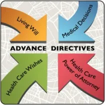
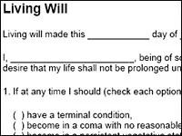
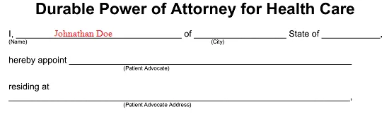

Expanded Nursing Uganda Explanation
Advanced directives should be understood beyond a short definition. Link the concept to patient history, focused assessment, common risks, nursing priorities, documentation and evaluation of outcomes.
01 ADVANCE DIRECTIVES IN PALLIATIVE CARE
An advance directive, also known as an Advance Directive, is a legal document that upholds the principle of autonomy by expressing a patient’s desires regarding medical treatments when they are unable to make decisions themselves.
Advance directives serve as essential tools for documenting end-of-life patients’ wishes when they are no longer able to make decisions about their medical care. In palliative care, the two most common types of advance directives are:
- Living will
- Durable power of attorney for healthcare, also known as the healthcare power of attorney or healthcare proxy.
A living will is a legally binding document that allows individuals to maintain control over their healthcare decisions in the event that they become incapable of making choices on their own.
It specifically applies to situations where the person has a terminal illness with no possibility of cure or is in a permanent unconscious state, often referred to as a “ persistent vegetative state .”
The purpose of a living will is to outline the types of medical treatments the person would or would not want in these circumstances, including decisions regarding life-prolonging measures such as dialysis, tube feedings, or artificial life support like breathing machines.
This document must be written and signed by the patient, and it usually requires witnesses who are not spouses, potential heirs, the patient’s doctors, or employees of the patient’s healthcare facility.
- Use of medical equipment, such as dialysis machines or ventilators.
- Instructions regarding “do not resuscitate” orders, indicating preferences regarding CPR if breathing or heartbeat stops.
- Choices regarding the administration of fluids (typically through intravenous means) and/or nutrition (tube feeding) if the person becomes unable to eat or drink.
- Decision on whether to receive food and fluids even when unable to make other decisions.
- Preferences for pain management, symptom control, and palliative care, even if decision-making capacity is compromised.
- Desire to donate organs or other body tissues after death.
- Understanding that choosing not to pursue aggressive medical treatment is distinct from refusing all forms of medical care. Other forms of treatment, such as pain medication and antibiotics, can still be administered to ensure comfort, shifting the treatment goal from cure to comfort. It is crucial to clearly express specific preferences and wishes in the living will.
Note: The client has the right to revoke or amend a living will at any time according to their wishes.
A durable power of attorney for health care, also known as a health care power of attorney, is a legal document that enables the client to appoint a trusted person as their proxy or agent to make health care decisions on their behalf in the event that they become unable to do so.
- The appointed proxy or agent has the authority to communicate with doctors and caregivers and make decisions based on the client’s previously expressed directions.
- The chosen proxy determines the treatments or procedures that the client would want or not want. If the client’s wishes are unknown in a particular situation, the agent will make decisions based on what they believe the client would choose.
- It is essential to select a person as the proxy whom the client trusts to carry out their wishes, especially in times of stress, uncertainty, and sadness.
- The client should have open discussions with their chosen proxy, ensuring they are comfortable with the role and discussing their wishes in detail.
- It is advisable to designate an alternate person in case the primary proxy becomes unable or unwilling to fulfill their role. The law generally prohibits health care providers, such as doctors, nurses, or other caregivers, from serving as agents unless they are close relatives.
The following considerations apply to the person chosen as the client’s health care agent:
- Must be 18 years of age or older.
- Cannot be the client’s treating health care provider.
- Cannot be an employee of the client’s health care provider, unless they are related to the client.
- Cannot be the client’s residential care provider, unless they are related to the client.
- Has the authority to make health care decisions on behalf of the client only when the attending doctor certifies the client as incapable of making their own decisions.
- Must make health care decisions on behalf of the client if the client has not documented their health care directives, even in end-of-life situations.
- Cannot make decisions for the client if the client objects, regardless of their capacity.
- Cannot override a medical power of attorney if one is in effect.
02 Terms Used in Advance Directives
Do Not Resuscitate Order(DNR)
Resuscitation refers to the medical intervention of restarting the heart and breathing, such as through CPR or the use of life-sustaining devices.
Do Not Resuscitate (DNR) orders are instructions that indicate medical staff should not attempt to revive a patient if their heart or breathing stops.
- In the hospital : A DNR order means that no life-saving measures will be taken if the patient’s heart or breathing ceases. It allows for a natural death and may be referred to as an “ Allow Natural Death ” order. While in the hospital, patients can request a DNR order from their doctor, although some hospitals require a new order with each admission. It’s important to note that a hospital DNR order is only applicable within the hospital setting.
- Outside the hospital : Some states have an advance directive known as a Do Not Attempt Resuscitation (DNAR) or special Do Not Resuscitate (DNR) order for use outside the hospital. This order is specifically designed for Emergency Medical Service (EMS) teams and allows patients to refuse full resuscitation efforts in advance, even if EMS is called. It requires the signature of both the patient and the doctor.
Physician Orders for Life-Sustaining Treatment (POLST)
Physician Orders for Life-Sustaining Treatment (POLST) is not an advance directive but a set of specific medical orders that a seriously ill person can complete and have signed by their doctor. The POLST is carried with the patient and is applicable in various healthcare settings. Emergency personnel, such as paramedics and emergency room doctors, are obligated to follow these orders. Without a POLST form, emergency care staff typically provide all possible treatments to keep the patient alive.
Pregnancy
If a woman is of childbearing age, it is important for her to clearly state her decisions regarding healthcare during pregnancy in case of unforeseen circumstances. Whether healthcare providers will honor these decisions depends on factors such as the risks to both the mother and the fetus, the stage of pregnancy, and the policies of the doctors and healthcare facilities involved. Generally, if a woman is in the second or third trimester of pregnancy, doctors will provide necessary medical care to preserve the lives of both the mother and the fetus.
Organ and Tissue Donation
Instructions for organ and tissue donation can be included in the advance directive. Many states also offer organ donor cards for this purpose.
Note : While older adults are the primary demographic with advance directives, it is never too soon to plan for emergencies. For individuals concerned about mental illness, a mental health care directive or psychiatric care directive can outline healthcare choices in the event of serious mental incapacity.
03 Advantages of Advance Directives
- Advance directives provide a simple and clear way for clients to express their wishes in case they become incapacitated and unable to communicate.
- These directives allow clients to appoint a trusted person, such as a family member or close friend, to make decisions on their behalf when they are unable to do so or in specific circumstances they have designated.
- Creating an advance directive helps alleviate the stress for both family members and healthcare professionals before a serious injury or illness occurs.
- By using an advance directive, the course of medical treatment can be guided effectively throughout the patient’s hospice care.
- Through an advance directive, patients can communicate their preferences and choices to healthcare providers while they are still able to do so.
- Having an advance directive helps ensure that the patient can avoid unnecessary pain by clearly stating their wishes regarding medical procedures.
- It also helps the patient avoid unwanted hospitalization by providing instructions on preferred locations for end-of-life care, such as hospice or home.
04 How a Nurse Can Help a Patient Prepare for Writing an Advance Directive
- Assessing and identifying of the patient’s need of an advanced directive.
- Informing the patient about the purpose and importance of advance directives.
- Providing necessary information to the patient regarding the process of writing an advance directive, including the following:
- Emphasizing that a lawyer is not required to prepare advance directives.
- Encouraging the patient to inform their physician and loved ones about their specific requests.
- Assisting the patient in appointing a healthcare agent who understands their values and is important to them.
- Discussing the patient’s preferences for end-of-life care, such as staying in hospice or at home.
- Clarifying that advance directives can be official with the signatures of two witnesses who are not named in the document, without the need for an attorney or notary. The completed document should be given to the physician for inclusion in the medical record.
- Advising the patient to have someone review the documents to ensure they are filled out correctly.
- Stressing the importance of carefully reading and following all instructions to include all necessary information and ensure proper witnessing.
- Recommending the patient make multiple photocopies of the completed documents.
- Advising the patient to keep the original documents in a safe yet easily accessible place and inform others about their location. The location of the originals can be noted on the photocopies.
- Cautioning against keeping advance directives in a SAFE DEPOSIT BOX as others may need access to them.
- Encouraging the patient to provide photocopies to their healthcare proxy (agent), doctors, and anyone else involved in their healthcare.
05 Nursing Uganda Clinical Lens
Use Advanced directives as a practical nursing topic, not only a memorized definition. Focus on comfort, dignity, symptom control, communication and family support.
- What to understand first: define advanced directives, identify the normal or expected pattern, then explain what changes when the patient is unwell.
- Why it matters in care: the nurse must recognize risk early, explain findings clearly, document accurately and know when to escalate.
- How to revise it: connect each point to assessment, nursing diagnosis or care problem, intervention, rationale and evaluation.
06 Assessment Guide
- Pain and other symptoms, function, sleep, appetite, mood, spiritual distress and family concerns.
- Medication response, side effects, wound or skin needs and end-of-life preferences.
- Caregiver burden, home resources and urgent red flags.
07 Nursing Priorities, Rationales and Outcomes
- Relieve distressing symptoms and prevent avoidable suffering.
- Communicate honestly, respectfully and at the patient's pace.
- Support family care, medication access, dignity and continuity.
The rationale for these priorities is patient safety: nursing actions should prevent deterioration, reduce discomfort, support recovery and create clear evidence for the next caregiver.
- Expected outcome: Symptoms are better controlled, patient preferences are respected and the family knows when to seek help.
08 Patient Teaching and Revision Check
- Explain advanced directives in simple language the patient or caregiver can repeat back.
- Teach warning signs, medicine or follow-up instructions, hygiene or lifestyle points where relevant.
- For exams, prepare a short answer using: definition, causes or risk factors, signs, assessment, management, complications and prevention.
- For ward practice, document baseline findings, actions taken, patient response and the plan for review.
Illustrations and Diagrams (4)




Related Video Lectures
Watch nursing lecture videos on YouTube for this topic. Opens in a new tab.
Watch on YouTubeExternal link: YouTube may use its own cookies and terms. Nursing Uganda is not affiliated with YouTube.